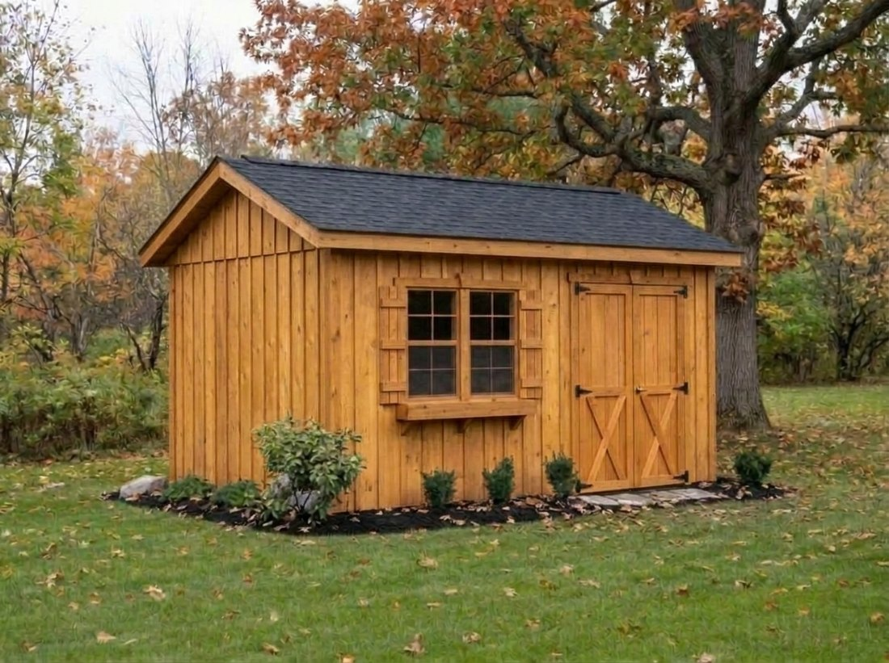

MODEL 01 / 12Traditional · 5/12 gable
The Carriage Lane
Classic Craftsmanship. Everyday Versatility.
A familiar Appalachian gable roof, Craftsman double doors, and warm timber character give this hardworking backyard building enduring appeal. A practical choice for organized storage, equipment, and a dedicated place for weekend projects.
Craftsman Double DoorsStorage & Projects
See Your Price